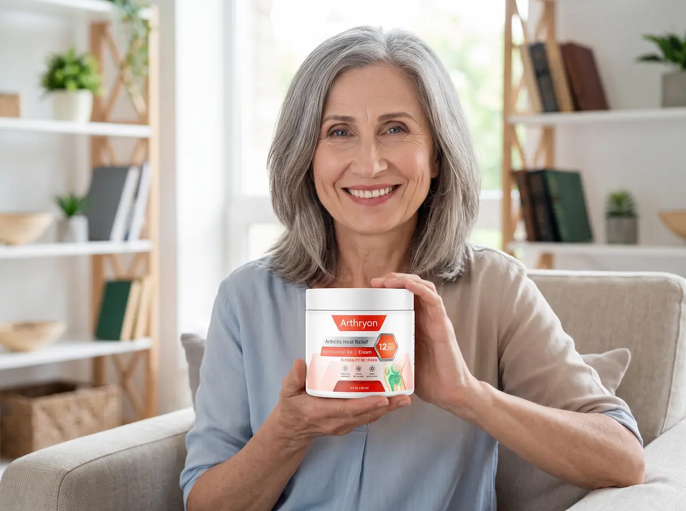
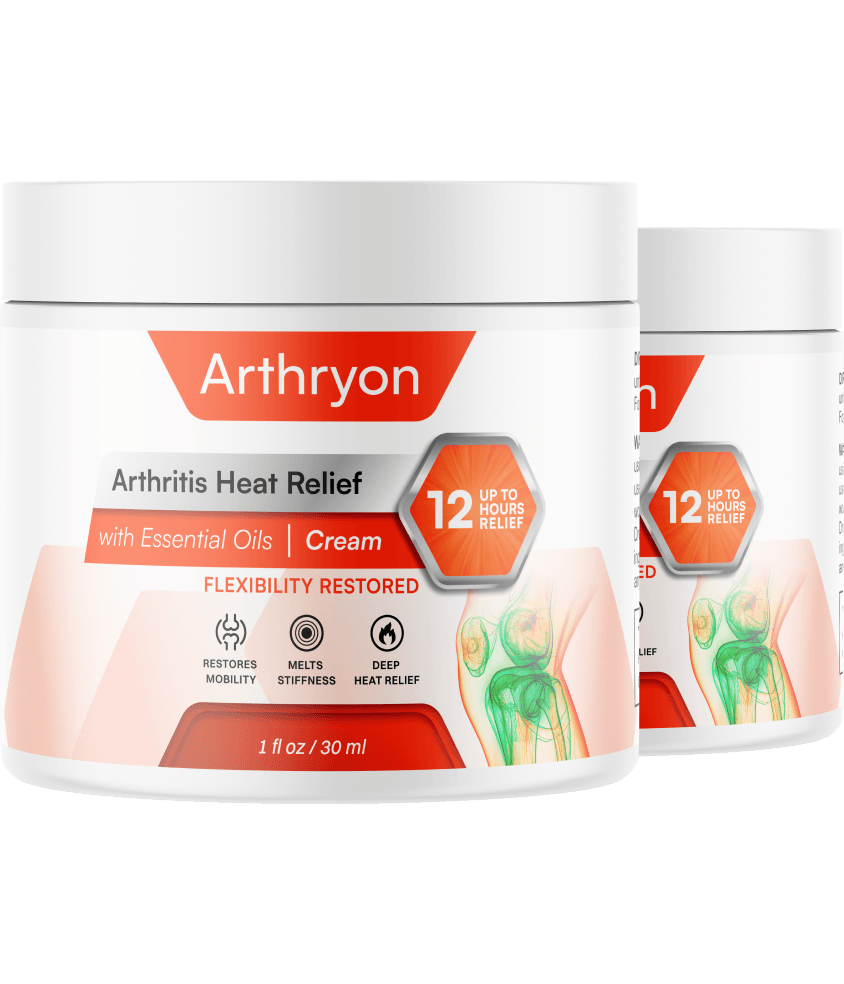

I tested Arthryon Arthritis Heat Relief Cream for 90 days to verify if its targeted triple-action botanical formula truly penetrates deep to ease stiffness, soothe joint soreness, and restore everyday flexibility. Here is the unfiltered report.
Updated for 2026 | Independent Consumer Case Study | Topical Bioactive Analysis

Roxie Edwards, 56
Active Gardening Enthusiast & Former Retail Manager
After decades of standing on hard floors and continuous physical routine, Roxie began dreading simple daily activities. Morning stiffness in her knees and fingers made getting out of bed a slow ordeal, and simple evening strolls with her dog became increasingly uncomfortable.
“I was skeptical of topical creams because most just leave a chemical smell and grease without solving the underlying discomfort,” Roxie explained. “I wanted something that absorbed fast, supported genuine mobility, and let me tend my garden without aching joints.”
Roxie agreed to document a structured 90-day protocol with Arthryon Cream, monitoring absorption speed, morning joint ease, and everyday flexibility.
Baseline Situation: Deep aches in my knees when climbing stairs and stiffness in my knuckles were my major challenges. I ordered the multi-pack to ensure consistent application, massaging the cream directly onto target joints morning and night.
First 10 Days (Instant Soothing & Rapid Absorption): From the very first application, the combination of Arnica Oil and natural Tea Tree gave a refreshing, deeply penetrating soothing sensation in roughly 5 minutes. Unlike pharmacy ointments, it left zero sticky residue, absorbing completely into the skin.
Weeks 3 to 6 (Noticeable Flexibility): By week four, morning stiffness was dramatically reduced. Getting out of bed didn't require pausing to "warm up" my knees. Stair climbing felt fluid, and hand stiffness no longer interfered with basic chores.
Weeks 7 to 12 (Sustained Comfort): Three months in, the cumulative hydrating benefits of Hyaluronic Acid and natural anti-inflammatory botanicals kept my joints comfortable even after hours on my feet. Arthryon proved to be a reliable, non-greasy daily staple.
That is Roxie holding the authentic Arthryon jar she incorporated into her morning and evening self-care regimen. No greasy residue, no lingering chemical fragrance—just targeted botanical care.
“It takes less than a minute to massage in, and within minutes you feel that deep, easing warmth,” Roxie noted. “It made a tangible difference in my day-to-day quality of life.”
With thousands of generic joint gels lining drugstore shelves, it is reasonable to question whether Arthryon stands out. Most generic products rely on synthetic menthol or camphor to trick the nervous system with temporary cold or burn sensations without nourishing the actual tissue.
Arthryon takes a biologically grounded triple-action approach: **Arnica Oil** to ease localized tenderness and swelling, **Hyaluronic Acid** to hydrate and lubricate connective tissue at the surface level, and **Tea Tree Essential Oil** to calm irritation.
Tested by third-party laboratories for purity and potency, it delivers genuine, non-greasy topical joint comfort without a prescription.
Overall Formulation Score
Speed of Action (5-10 min)
Stiffness Reduction
Non-Greasy Absorption
Skin Tolerance & Hydration
Value for Money
Ease of Daily Use
Apply a moderate amount of cream directly over stiff or sore knees, hands, back, or neck areas.
Massage thoroughly in circular motions until the cream is fully absorbed into the skin.
Use 2 to 3 times daily to compound joint mobility and maintain flexible, active movement throughout your routine.
Due to high demand, unauthorized third-party listings and counterfeit "pain relief cream" jars have surfaced on major digital marketplaces like Amazon and eBay.
Independent checks on unauthorized inventory often reveal diluted formulas, lack of proper seals, and altered batch codes. Most importantly, **purchases made through unauthorized resellers are not protected by the official 30-day money-back guarantee**.
To safeguard your skin and ensure verified product quality, purchase exclusively through the official US direct-to-consumer store linked below.

Arthryon is a high-grade topical joint and muscle relief cream crafted for adults experiencing daily soreness, stiffness, and reduced physical flexibility.
Rather than relying on intense chemical odors or superficial numbing, Arthryon pairs clinically backed botanicals with deep-penetrating hydration to target discomfort right at the affected area. It absorbs quickly to revitalize connective tissue and support comfortable, energetic mobility.
Pure Arnica Montana Oil penetrates beneath the skin to reduce localized swelling, bruising, and muscle tenderness.
Hyaluronic Acid delivers deep moisture to surrounding tissues, easing joint rigidity and promoting smoother movement.
Tea Tree Essential Oil provides antimicrobial and calming properties that support skin health and soothe aching nerves.
Arthryon is manufactured using natural, plant-derived ingredients and is third-party lab tested for purity and safety. It is safe for ongoing daily use by adults of all ages.
Wake up and start moving without waiting for your knees, fingers, and lower back to "unlock."
Navigate stairs and household steps smoothly without constant wincing or relying on handrails.
Play with children and grandchildren, go on walks, and tackle garden projects without paying for it later.
Get in and out of your car comfortably without feeling locked up after extended driving.
Enjoy clean, fast absorption that won't ruin clothing or leave strong medicinal odors.
Reclaim your active lifestyle and daily autonomy without constantly managing aches.
“I was skeptical at first, but this product really works! My stiffness in the morning has significantly decreased, and I can enjoy my walks again without discomfort. Highly recommend!”
“I’ve tried a bunch of options over the years, but this actually made a difference. Within just a few uses, my joints didn't feel as stiff and achy. I’m really glad I gave it a shot!”
“After a month, I can give this 5 stars! My back and knees ached after work. Within the first week, the sharp soreness subsided. I feel like my old self again!”
“My knees used to ache just getting out of bed, and now I barely think about them. It's not magic, but after a week I can really feel the difference. Definitely sticking with it!”
“I had a hard time with stairs and standing too long. Since using Arthryon, my joints feel looser and I am not sore by the end of the day. It’s helped me stay active!”
“At my age I thought joint pain was inevitable, but this cream proved otherwise. It absorbs quickly and doesn't leave a greasy residue. Wish I found it sooner!”
Every genuine purchase of Arthryon is backed by a full **30-day money-back satisfaction guarantee**.
If you don’t experience noticeable relief from stiffness, greater flexibility, and fast soothing comfort, simply reach out to friendly 24/7 customer support (+1-323-286-4947) within 30 days of purchase for a complete refund. You have nothing to lose except daily discomfort.
Take advantage of internet-exclusive US discounts with free DHL shipping included on all packages.
Standard Relief
YOU SAVE $60
Total: $180.00 $119.90
FREE SHIPPING
Order 2 Bottles5 Bottles Total
YOU SAVE $270.00!
Total: $450.00 $179.85
FREE DHL SHIPPING
Claim 5-Bottle Package3 Bottles Total
YOU SAVE $120.00
Total: $270.00 $149.85
FREE SHIPPING
Claim 3-Bottle Package256-Bit SSL Secured Checkout • Internet Exclusive Offers for US Residents
After reviewing clinical data, testing daily application over a full 90-day protocol, and analyzing customer feedback, our independent conclusion is affirmative: **Arthryon is a reliable, fast-absorbing topical solution for joint stiffness and daily muscle soreness in 2026.**
By steering clear of harsh synthetic medications and focusing on the synergy of Arnica Oil, Tea Tree, and Hyaluronic Acid, it delivers dependable comfort and restores mobility.
For maximum savings and lasting joint support, we recommend the 5-bottle package (Buy 3 + Get 2 Free) at $35.97 each with free US shipping.